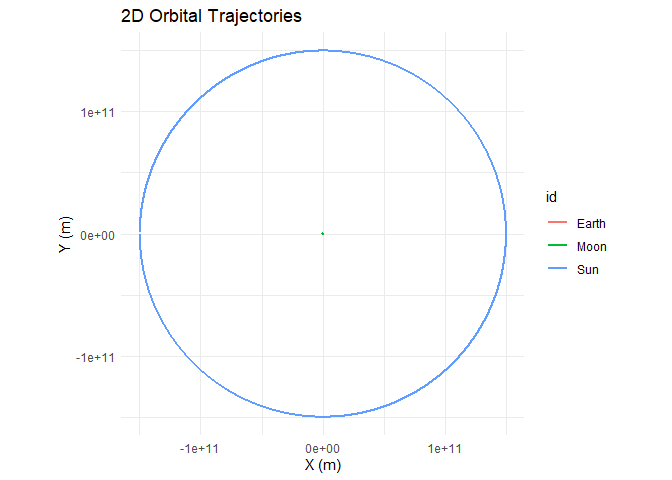
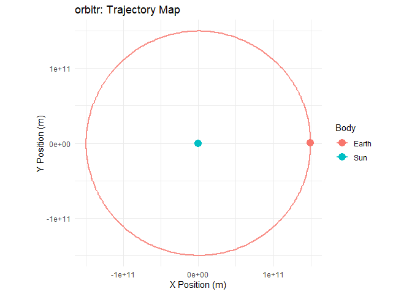
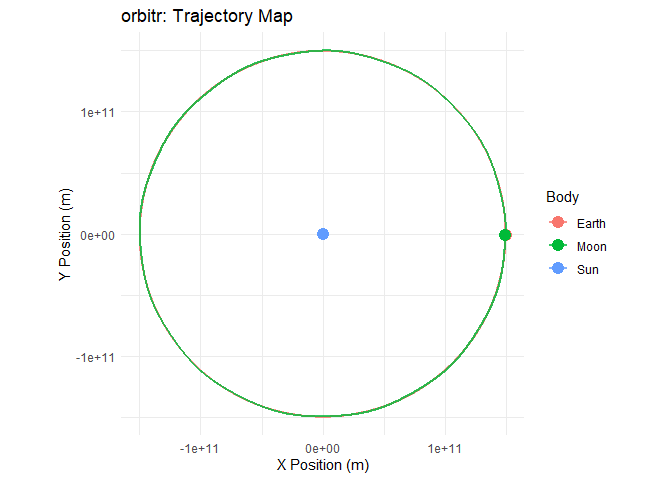
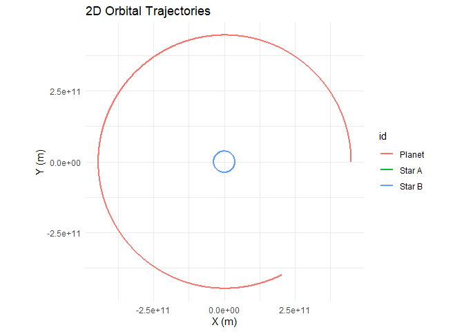
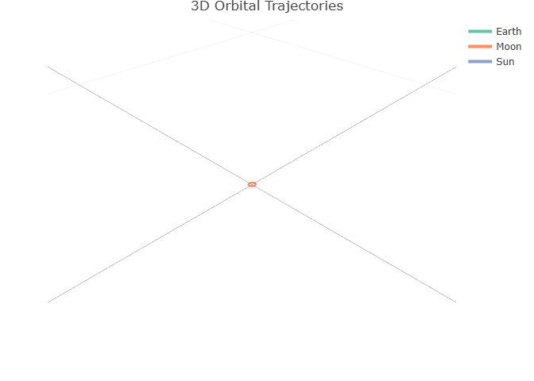
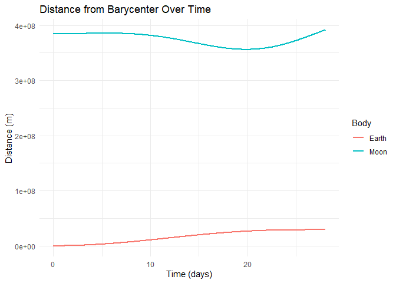
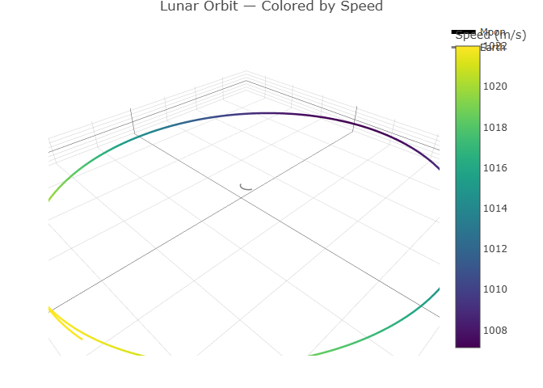

Tidy N-Body Orbital Mechanics for R
Table of Contents
- Installation
- The Physics
- API Reference
- Examples
- Unstable Orbits and the Three-Body Problem
- 3D Plotting
- Custom Visualization with ggplot2
- Custom Visualization with plotly
- Built-In Physical Constants
- License
orbitr is a lightweight N-body gravitational physics engine built for the R ecosystem. Simulate planetary orbits, binary star systems, or chaotic three-body problems in a few lines of pipe-friendly code. Under the hood it ships a compiled C++ acceleration engine via Rcpp and falls back gracefully to a fully vectorized pure-R implementation.
library(orbitr)
##
## Attaching package: 'orbitr'
## The following object is masked from 'package:stats':
##
## simulate
create_system() |>
add_body("Sun", mass = mass_sun) |>
add_body("Earth", mass = mass_earth, x = distance_earth_sun, vy = speed_earth) |>
add_body("Moon", mass = mass_moon,
x = distance_earth_sun + distance_earth_moon,
vy = speed_earth + speed_moon) |>
simulate(time_step = 3600, duration = 86400 * 365) |>
shift_reference_frame("Earth") |>
plot_orbits()
The Physics
Gravitational Acceleration
Every body in the system attracts every other body according to Newton’s Law of Universal Gravitation. For body j, the net acceleration due to all other bodies k is:
$$\vec{a}\_j = \sum\_{k \neq j} \frac{G \\ m\_k}{r\_{jk}^2} \\ \hat{r}\_{jk}$$
where rjk = |r⃗k − r⃗j| is the distance between the two bodies and r̂jk is the unit vector pointing from j toward k.
Why Initial Velocity Matters
Gravity alone will pull every body straight toward every other body. What prevents them from colliding is their initial velocity — the sideways motion that turns a free-fall into a curved orbit. This is the same reason the Moon doesn’t crash into the Earth: it’s falling toward us constantly, but it’s also moving sideways fast enough that it keeps missing.
When you call add_body(), the vx, vy, vz parameters set this initial velocity. The balance between speed and distance determines the shape of the orbit. At a given distance r from a central mass M, the circular orbit velocity is:
$$v\_{\text{circ}} = \sqrt{\frac{G \\ M}{r}}$$
If the body’s speed exactly matches this, it traces a perfect circle. Faster and the orbit stretches into an ellipse (or escapes entirely if ). Slower and the orbit drops into a tighter ellipse that dips closer to the central body. With zero velocity, the body falls straight in — no orbit at all.
Gravitational Softening
When two bodies pass very close, r → 0 and the acceleration diverges toward infinity. This is a well-known numerical problem in N-body codes. orbitr offers an optional softening length ε that regularizes the potential:
With softening enabled, close encounters produce large but finite forces instead of blowing up to NaN. Set softening = 0 (the default) for exact Newtonian gravity, or try something like softening = 1e4 (10 km) for dense systems.
Numerical Integration Methods
simulate() offers three methods for stepping the system forward through time. All operate in 3D Cartesian coordinates.
1. Velocity Verlet (default, method = "verlet")
A second-order symplectic integrator. It conserves energy over long timescales, making it the gold standard for orbital mechanics. Orbits stay closed and stable indefinitely.
$$\vec{x}\_{t+\Delta t} = \vec{x}\_t + \vec{v}\_t \\ \Delta t + \tfrac{1}{2} \vec{a}\_t \\ \Delta t^2$$
The position is advanced first, then the acceleration is recalculated at the new position, and finally the velocity is updated using the average of the old and new accelerations. This requires two acceleration evaluations per step (the main cost), but the payoff in stability is enormous.
2. Euler-Cromer (method = "euler_cromer")
A first-order symplectic method. It updates velocity first, then uses the new velocity to update position. This small reordering prevents the systematic energy drift that plagues standard Euler:
v⃗t + Δt = v⃗t + a⃗t Δt
x⃗t + Δt = x⃗t + v⃗t + Δt *Δ**t*
Faster than Verlet (one acceleration evaluation per step) but less accurate. Good for quick previews.
3. Standard Euler (method = "euler")
The classical textbook method. Position and velocity are both updated using values from the current time step:
x⃗t + Δt = x⃗t + v⃗t Δt
v⃗t + Δt = v⃗t + a⃗t Δt
This artificially pumps energy into the system, causing orbits to spiral outward over time. Included primarily for educational comparison — use Verlet for real work.
The C++ Engine
The inner acceleration loop is the computational bottleneck of any N-body simulation. orbitr ships a compiled C++ kernel (via Rcpp) that computes the O(n2) pairwise interactions in a tight nested loop. When the package is installed from source with a working C++ toolchain, simulate() automatically dispatches to this engine. If the compiled code isn’t available, it falls back to a vectorized R implementation that uses matrix outer products — still fast, but the C++ path is significantly faster for systems with many bodies.
You can control this with the use_cpp argument:
API Reference
create_system()
Initializes an empty orbital simulation. The gravitational constant G is set here and applies to all bodies added later. Set G = 0 for a zero-gravity (inertia-only) environment.
# Standard gravity (G = 6.6743e-11)
universe <- create_system()
# Stronger gravity (10x)
universe <- create_system(G = 6.6743e-10)
# Zero gravity sandbox
universe <- create_system(G = 0)Returns an orbit_system S3 object.
add_body(system, id, mass, x, y, z, vx, vy, vz)
Adds a celestial body to the system. Position (x, y, z) is in meters, velocity (vx, vy, vz) in meters per second. All default to 0, placing the body at the origin at rest.
| Parameter | Type | Default | Description |
|---|---|---|---|
system
|
orbit_system
|
— | The system to add the body to |
id
|
character
|
— | Unique name for the body |
mass
|
numeric
|
— | Mass in kilograms (must be non-negative) |
x, y, z
|
numeric
|
0
|
Initial position in meters |
vx, vy, vz
|
numeric
|
0
|
Initial velocity in m/s |
create_system() |>
add_body("Earth", mass = 5.97e24) |>
add_body("Moon", mass = 7.34e22, x = 3.84e8, vy = 1022)Piping-friendly: returns the updated orbit_system.
simulate(system, time_step, duration, method, softening, use_cpp)
The core engine. Propagates the system forward through time and returns the full trajectory as a tidy tibble.
| Parameter | Type | Default | Description |
|---|---|---|---|
system
|
orbit_system
|
— | The configured system |
time_step
|
numeric
|
60
|
Seconds per integration step |
duration
|
numeric
|
86400
|
Total simulation time in seconds |
method
|
character
|
“verlet”
|
“verlet”, “euler_cromer”, or “euler”
|
softening
|
numeric
|
0
|
Softening length in meters |
use_cpp
|
logical
|
TRUE
|
Use the C++ engine when available |
Returns a tibble with columns: time, id, mass, x, y, z, vx, vy, vz.
shift_reference_frame(sim_data, center_id, keep_center = TRUE)
Transforms all positions and velocities so that a chosen body sits at the origin for every time step. This is how you go from a heliocentric view to a geocentric one, for example.
| Parameter | Type | Default | Description |
|---|---|---|---|
sim_data
|
tibble
|
— |
Output from simulate()
|
center_id
|
character
|
— | ID of the body to place at (0, 0, 0) |
keep_center
|
logical
|
TRUE
|
Keep the center body in the output? |
# View the Moon's orbit from Earth's perspective
sim |>
shift_reference_frame("Earth") |>
plot_orbits()
# Remove Earth from the plot entirely
sim |>
shift_reference_frame("Earth", keep_center = FALSE) |>
plot_orbits()
plot_orbits(sim_data, three_d = FALSE)
A smart plotting dispatcher that automatically chooses between 2D and 3D visualization. If any body has non-zero Z positions (or if three_d = TRUE), it renders an interactive 3D plot using plotly. Otherwise it produces a 2D trajectory map (x vs y) using ggplot2 with coord_equal().
| Parameter | Type | Default | Description |
|---|---|---|---|
sim_data
|
tibble
|
— |
Output from simulate()
|
three_d
|
logical
|
FALSE
|
Force 3D rendering even for planar data |
Returns a ggplot object (2D) or a plotly HTML widget (3D).
plot_orbits_3d(sim_data)
Generates an interactive 3D visualization using plotly. You can click and drag to rotate, scroll to zoom, and hover over trajectories to see body names and timestamps. Uses aspectmode = "data" to preserve proportions so circular orbits look circular in 3D space.
Requires the plotly package. Returns a plotly HTML widget.
Examples
The Earth-Moon System
A standard 28-day lunar orbit. One-hour time steps.
library(orbitr)
create_system() |>
add_body("Earth", mass = mass_earth) |>
add_body("Moon", mass = mass_moon, x = distance_earth_moon, vy = speed_moon) |>
simulate(time_step = 3600, duration = 86400 * 28) |>
plot_orbits()
The Sun-Earth System
A full year with daily time steps.
create_system() |>
add_body("Sun", mass = mass_sun) |>
add_body("Earth", mass = mass_earth, x = distance_earth_sun, vy = speed_earth) |>
simulate(time_step = 86400, duration = 86400 * 365) |>
plot_orbits()
The Three-Body Problem (Sun-Earth-Moon)
Because orbitr uses N-body gravity, nested hierarchies require no special setup. Piggyback the Moon’s initial conditions onto Earth’s using simple vector addition:
create_system() |>
add_body("Sun", mass = mass_sun) |>
add_body("Earth", mass = mass_earth, x = distance_earth_sun, vy = speed_earth) |>
add_body("Moon", mass = mass_moon,
x = distance_earth_sun + distance_earth_moon, # Earth's X + lunar orbital radius
vy = speed_earth + speed_moon) |> # Earth's speed + Moon's orbital speed
simulate(time_step = 3600, duration = 86400 * 365) |>
plot_orbits()
Shifting Your Point of View
The three-body plot above is heliocentric (Sun at center). To see the Moon’s path from Earth’s perspective, pipe the results through shift_reference_frame():
create_system() |>
add_body("Sun", mass = mass_sun) |>
add_body("Earth", mass = mass_earth, x = distance_earth_sun, vy = speed_earth) |>
add_body("Moon", mass = mass_moon,
x = distance_earth_sun + distance_earth_moon,
vy = speed_earth + speed_moon) |>
simulate(time_step = 3600, duration = 86400 * 365) |>
shift_reference_frame("Earth") |>
plot_orbits()
Comparing Integration Methods
Use the method argument to see how different integrators behave over long simulations:
library(dplyr)
##
## Attaching package: 'dplyr'
## The following objects are masked from 'package:stats':
##
## filter, lag
## The following objects are masked from 'package:base':
##
## intersect, setdiff, setequal, union
system <- create_system() |>
add_body("Star", mass = 1e30) |>
add_body("Planet", mass = 1e24, x = 1e11, vy = 30000)
verlet <- simulate(system, time_step = 3600, duration = 86400 * 365, method = "verlet") |>
mutate(method = "Velocity Verlet")
euler_cromer <- simulate(system, time_step = 3600, duration = 86400 * 365, method = "euler_cromer") |>
mutate(method = "Euler-Cromer")
euler <- simulate(system, time_step = 3600, duration = 86400 * 365, method = "euler") |>
mutate(method = "Standard Euler")
bind_rows(verlet, euler_cromer, euler) |>
filter(id == "Planet") |>
ggplot2::ggplot(ggplot2::aes(x = x, y = y, color = method)) +
ggplot2::geom_path(alpha = 0.7) +
ggplot2::coord_equal() +
ggplot2::theme_minimal()
You’ll see that Verlet traces a clean closed ellipse, Euler-Cromer stays close but drifts slightly, and standard Euler spirals outward as it pumps energy into the orbit.
A Stable Binary Star System with a Circumbinary Planet
Two equal-mass stars orbit their common center of mass while a planet orbits the pair from far away. The key to stability is placing the planet well outside the binary orbit — a general rule of thumb is at least 3–4 times the star separation.
# Two stars, each 1 solar mass, separated by 0.5 AU
# They orbit their barycenter (the origin) in a circle
star_sep <- 0.5 * distance_earth_sun # 0.5 AU apart
star_r <- star_sep / 2 # each is 0.25 AU from center
star_v <- sqrt(mass_sun * 6.6743e-11 / (4 * star_r)) # circular binary velocity
# Planet at 3 AU from the barycenter — well outside the binary
planet_r <- 3 * distance_earth_sun
planet_v <- sqrt(2 * mass_sun * 6.6743e-11 / planet_r) # circular velocity around total mass
create_system() |>
add_body("Star A", mass = mass_sun, x = star_r, vy = star_v) |>
add_body("Star B", mass = mass_sun, x = -star_r, vy = -star_v) |>
add_body("Planet", mass = mass_earth, x = planet_r, vy = planet_v) |>
simulate(time_step = 3600, duration = 86400 * 365 * 3) |>
plot_orbits()
Unstable Orbits and the Three-Body Problem
If you start plugging in random masses and velocities, you’ll quickly discover that most configurations are wildly unstable. This isn’t a bug — it’s physics. Stable orbits are the exception, not the rule.
In a two-body system, stability is relatively easy to achieve: give the smaller body the right velocity at the right distance and it traces a clean ellipse forever. But the moment you add a third body, things get chaotic. The three-body problem has no general closed-form solution — small differences in initial conditions lead to dramatically different outcomes, including bodies being flung out of the system entirely.
Here’s an example: three equal-mass stars arranged in a triangle with slightly asymmetric velocities. It starts off looking like an interesting dance, but the asymmetry compounds and eventually one or more stars get ejected:
create_system() |>
add_body("Star A", mass = 1e30, x = 1e11, y = 0, vx = 0, vy = 15000) |>
add_body("Star B", mass = 1e30, x = -5e10, y = 8.66e10, vx = -12990, vy = -7500) |>
add_body("Star C", mass = 1e30, x = -5e10, y = -8.66e10, vx = 14000, vy = -8000) |>
simulate(time_step = 3600, duration = 86400 * 365 * 10) |>
plot_orbits()
This is actually what happens in real stellar dynamics — close three-body encounters in star clusters frequently eject one star at high velocity while the remaining two settle into a tighter binary. The process is called gravitational slingshot ejection.
If your simulations are producing messy, diverging trajectories, here are a few things to check before assuming something is wrong:
- Velocity too high or too low. At a given distance r from a central mass M, the circular orbit speed is . Deviating significantly from this produces eccentric orbits or escape trajectories.
-
Bodies too close together. Close encounters produce extreme accelerations that can blow up numerically. Try increasing
softeningor using a smallertime_step. - Three or more bodies. Chaos is the natural state of N-body systems. The stable examples in this README are carefully tuned — don’t expect random configurations to behave.
-
Time step too large. If bodies move a significant fraction of their orbital radius in a single step, the integrator can’t track the orbit accurately. Try halving
time_stepand see if the result changes.
The built-in constants and examples in orbitr are designed to give you stable starting points. From there you can tweak parameters and watch how the system responds — that’s where the real intuition for orbital mechanics comes from.
3D Plotting
All simulations in orbitr run in full 3D — every body always has x, y, and z coordinates. When all motion happens in the XY plane (i.e., z = 0 and vz = 0 for every body), plot_orbits() produces a static 2D ggplot2 chart. The moment any body has non-zero Z motion, plot_orbits() automatically switches to an interactive 3D plotly visualization — no code changes needed.
You can also force 3D rendering for planar data with three_d = TRUE, which can be useful if you want the interactive rotation and zoom capabilities even for a flat system.
A Tilted Lunar Orbit
The Moon’s real orbit is inclined about 5° to the ecliptic. You can approximate this by giving the Moon a small vz component:
create_system() |>
add_body("Earth", mass = mass_earth) |>
add_body("Moon", mass = mass_moon,
x = distance_earth_moon,
vy = speed_moon * cos(5 * pi / 180),
vz = speed_moon * sin(5 * pi / 180)) |>
simulate(time_step = 3600, duration = 86400 * 28) |>
plot_orbits()
Because vz is non-zero, plot_orbits() detects 3D motion and returns an interactive plotly widget. You can drag to rotate, scroll to zoom, and hover to see timestamps.
Custom Visualization with ggplot2
plot_orbits() and plot_orbits_3d() are convenience functions for quick trajectory plots — they’re designed to get you a useful visualization in one line so you can focus on setting up the physics. But the real power of orbitr is that simulate() returns a standard tidy tibble. You can use ggplot2, plotly, or any other visualization tool directly on the output.
Here’s what the raw output looks like:
sim <- create_system() |>
add_body("Earth", mass = mass_earth) |>
add_body("Moon", mass = mass_moon, x = distance_earth_moon, vy = speed_moon) |>
simulate(time_step = 3600, duration = 86400 * 28)
sim
## # A tibble: 1,346 × 9
## id mass x y z vx vy vz time
## <chr> <dbl> <dbl> <dbl> <dbl> <dbl> <dbl> <dbl> <dbl>
## 1 Earth 5.97e24 0 0 0 0 0 0 0
## 2 Moon 7.34e22 384400000 0 0 0 1022 0 0
## 3 Earth 5.97e24 215. 0 0 0.119 0.000571 0 3600
## 4 Moon 7.34e22 384382520. 3679200 0 -9.71 1022. 0 3600
## 5 Earth 5.97e24 860. 4.11 0 0.239 0.00229 0 7200
## 6 Moon 7.34e22 384330083. 7358065. 0 -19.4 1022. 0 7200
## 7 Earth 5.97e24 1934. 16.5 0 0.358 0.00514 0 10800
## 8 Moon 7.34e22 384242692. 11036262. 0 -29.1 1022. 0 10800
## 9 Earth 5.97e24 3438. 41.1 0 0.477 0.00914 0 14400
## 10 Moon 7.34e22 384120357. 14713454. 0 -38.8 1021. 0 14400
## # ℹ 1,336 more rowsEach row is one body at one point in time. Every column is available for plotting, filtering, or analysis. Since this is just a tibble, you have the full power of dplyr and ggplot2 at your disposal.
For example, in the Earth-Moon system, plot_orbits() shows overlapping circles because both bodies orbit their shared barycenter at roughly the same scale. A more useful visualization might plot each body’s distance from the barycenter over time:
library(ggplot2)
sim |>
dplyr::mutate(r = sqrt(x^2 + y^2)) |>
ggplot(aes(x = time / 86400, y = r, color = id)) +
geom_line(linewidth = 1) +
labs(
title = "Distance from Barycenter Over Time",
x = "Time (days)",
y = "Distance (m)",
color = "Body"
) +
theme_minimal()
Or plot the Moon’s path relative to Earth with a color gradient showing the passage of time:
sim |>
shift_reference_frame("Earth", keep_center = FALSE) |>
ggplot(aes(x = x, y = y, color = time / 86400)) +
geom_path(linewidth = 1.2) +
scale_color_viridis_c(name = "Day") +
coord_equal() +
labs(title = "Lunar Orbit (Earth-Centered)", x = "X (m)", y = "Y (m)") +
theme_minimal()
Custom Visualization with plotly
Just as plot_orbits() is a quick convenience for 2D work, plot_orbits_3d() is a quick convenience for 3D. Both are intentionally simple — they get you a useful plot in one line so you can focus on the physics, not the formatting. When you need more control, the simulation tibble works just as well with plotly as it does with ggplot2.
For example, you could color trajectories by speed rather than by body, and add markers at the start and end of each orbit:
library(plotly)
## Warning: package 'plotly' was built under R version 4.5.3
##
## Attaching package: 'plotly'
## The following object is masked from 'package:ggplot2':
##
## last_plot
## The following object is masked from 'package:stats':
##
## filter
## The following object is masked from 'package:graphics':
##
## layout
sim <- create_system() |>
add_body("Earth", mass = mass_earth) |>
add_body("Moon", mass = mass_moon,
x = distance_earth_moon,
vy = speed_moon * cos(5 * pi / 180),
vz = speed_moon * sin(5 * pi / 180)) |>
simulate(time_step = 3600, duration = 86400 * 28)
sim <- sim |>
dplyr::mutate(speed = sqrt(vx^2 + vy^2 + vz^2))
plot_ly() |>
add_trace(
data = dplyr::filter(sim, id == "Moon"),
x = ~x, y = ~y, z = ~z,
type = 'scatter3d', mode = 'lines',
line = list(
width = 5,
color = ~speed,
colorscale = 'Viridis',
showscale = TRUE,
colorbar = list(title = "Speed (m/s)")
),
name = "Moon"
) |>
add_trace(
data = dplyr::filter(sim, id == "Earth"),
x = ~x, y = ~y, z = ~z,
type = 'scatter3d', mode = 'lines',
line = list(width = 3, color = 'gray'),
name = "Earth"
) |>
layout(
title = "Lunar Orbit Around Earth",
showlegend = FALSE,
scene = list(
xaxis = list(title = 'X (m)'),
yaxis = list(title = 'Y (m)'),
zaxis = list(title = 'Z (m)'),
aspectmode = "data"
)
)
The point is the same as with ggplot2: simulate() returns a standard tibble, so you have full access to plotly’s API for anything the built-in plotting functions don’t cover.
Built-In Physical Constants
orbitr ships a set of real-world masses, distances, and orbital speeds so you don’t have to Google them every time. All values are in SI units (kg, meters, m/s).
library(orbitr)
# Masses
mass_sun # 1.989e30 kg
mass_earth # 5.972e24 kg
mass_moon # 7.342e22 kg
mass_mars # 6.417e23 kg
mass_jupiter # 1.898e27 kg
mass_saturn # 5.683e26 kg
mass_venus # 4.867e24 kg
mass_mercury # 3.301e23 kg
# Orbital distances (semi-major axes)
distance_earth_sun # 1.496e11 m (~149.6 million km)
distance_earth_moon # 3.844e8 m (~384,400 km)
distance_mars_sun # 2.279e11 m
distance_jupiter_sun # 7.785e11 m
distance_venus_sun # 1.082e11 m
distance_mercury_sun # 5.791e10 m
# Mean orbital speeds
speed_earth # 29,780 m/s
speed_moon # 1,022 m/s
speed_mars # 24,070 m/s
speed_jupiter # 13,060 m/s
speed_venus # 35,020 m/s
speed_mercury # 47,360 m/sThis means the Earth-Moon example can be written as:
create_system() |>
add_body("Earth", mass = mass_earth) |>
add_body("Moon", mass = mass_moon, x = distance_earth_moon, vy = speed_moon) |>
simulate(time_step = 3600, duration = 86400 * 28) |>
plot_orbits()Why “Distance” Constants Are Semi-Major Axes
Orbital distances are not truly constant — every orbit is an ellipse, so the separation between two bodies changes continuously throughout each revolution. The values provided here are semi-major axes: the average of the closest approach (periapsis) and the farthest point (apoapsis).
The semi-major axis is the single most characteristic length scale of an elliptical